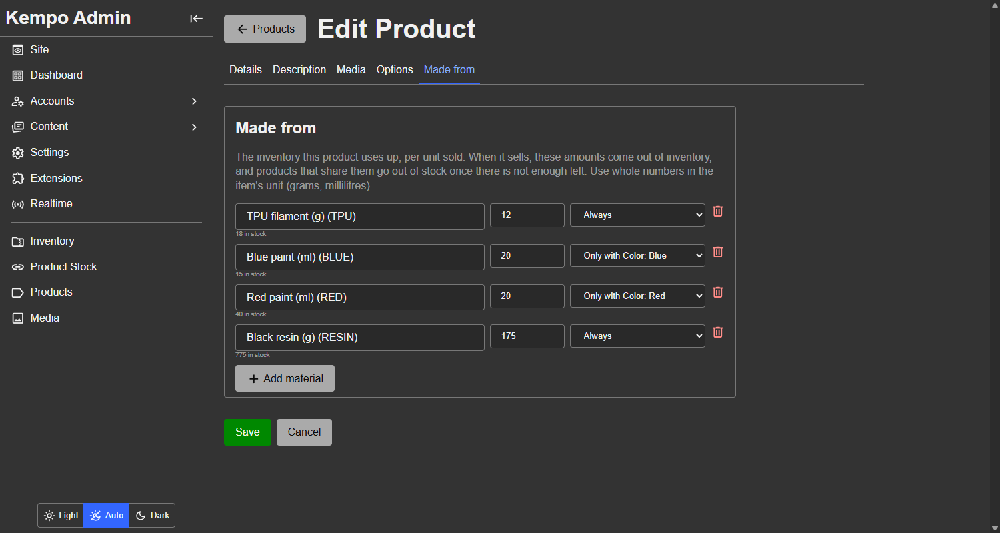

<page pageName="With inventory" title="With inventory - Kempo Products">
  <content>
    <p>If you make what you sell, the materials are what run out, not the products. <a href="https://github.com/dustinpoissant/kempo-products-inventory" target="_blank">kempo-products-inventory</a> connects this catalog to <a href="https://github.com/dustinpoissant/kempo-inventory" target="_blank">kempo-inventory</a>: sell a model car and the resin, paint and filament it is made from come out of stock automatically, and every product that can no longer be made goes out of stock with it.</p>
    <p>Neither extension needs the other. Install the connector when you use both. Kempo will not enable it until both are installed.</p>

    <h2 id="made-from" class="mt">Telling it what a product is made from</h2>
    <p>Open a product and use the <strong>Made from</strong> tab, which the connector adds after Details, Description, Media and Options. Each row is an inventory item, how much of it one unit uses, and, optionally, which choice of an option it is for.</p>
    <div class="mb">
      
      <small class="d-b tc-muted">The Made from tab. This car always uses 175 of resin and 12 of TPU, and 20 of red or blue paint depending on the colour chosen. Each row shows how much of that material is in stock.</small>
    </div>
    <p>Inventory counts whole numbers with no unit, so keep stock in grams and millilitres: <code>175</code>, not <code>0.175</code> kilograms.</p>
    <p>Look at the <strong>Options</strong> tab: the <strong>Blue</strong> choice is unticked because there is not enough blue paint for one more car. The connector did that, and it also made the product's stock read-only, because inventory now decides it.</p>

    <h3 class="mt">Selling a piece you already made</h3>
    <p>Open the item in the inventory admin and choose <strong>Make product from this item</strong>. The new product form opens with the name filled in and the item already listed as its material, one for one, so the product's stock is the item's quantity. Fill in the price and the rest, and save.</p>
    <div class="mb">
      
      <small class="d-b tc-muted">The panel the connector adds to every inventory item's page. It also lists the products already made from the item.</small>
    </div>

    <h2 id="selling" class="mt">What happens when it sells</h2>
    <ul>
      <li><strong>Selling takes the materials.</strong> When a purchase is recorded, 175 g of resin, 12 g of TPU and 20 ml of the colour that was bought are taken from inventory, all together or not at all. Each inventory movement carries the order reference.</li>
      <li><strong>Stock follows the materials.</strong> A product's stock is how many can be made from what is on hand, limited by the scarcest material. A colour is marked sold out when there is not enough of its paint for one more.</li>
      <li><strong>Restocking brings products back.</strong> Receiving resin in the inventory, or correcting a count there, updates every product made from it straight away.</li>
      <li><strong>Reversing a purchase puts back exactly what it took</strong>, even if the materials were edited since.</li>
    </ul>

    <h2 id="shared" class="mt">Products that share materials</h2>
    <p>With 300 g of PLA and two products that each need 200 g, both show one in stock. When one sells, 100 g is left, which is not enough for either, so <strong>both</strong> go out of stock. Neither product has to know about the other: the connector recalculates every product made from a material whenever that material changes.</p>

    <h2 id="problems" class="mt">When it goes wrong</h2>
    <p>Normally nothing does, because a product refuses to sell more than it thinks it can make. But if stock was changed behind the system's back, for example directly in the database, the materials for a purchase may not be there. The purchase stands, because it already happened. The connector records a <strong>problem</strong> with the order reference on the <strong>Product Stock</strong> admin page, and recalculates the affected products so they show what is really left. <strong>Recalculate everything</strong> on that page is the repair tool.</p>
    <div class="mb">
      
      <small class="d-b tc-muted">The Product Stock page lists everything that is linked and how many of each can be made. Anything that needs attention appears above the table.</small>
    </div>
    <p>An inventory item that products are made from cannot be deleted until it is removed from them.</p>
    <p>A product made from inventory shows its stock as read-only in the products admin, with the connector's name, so an edit there cannot be silently overwritten. To change it, change the inventory, or remove the product's materials to hand it back.</p>
  </content>
</page>
